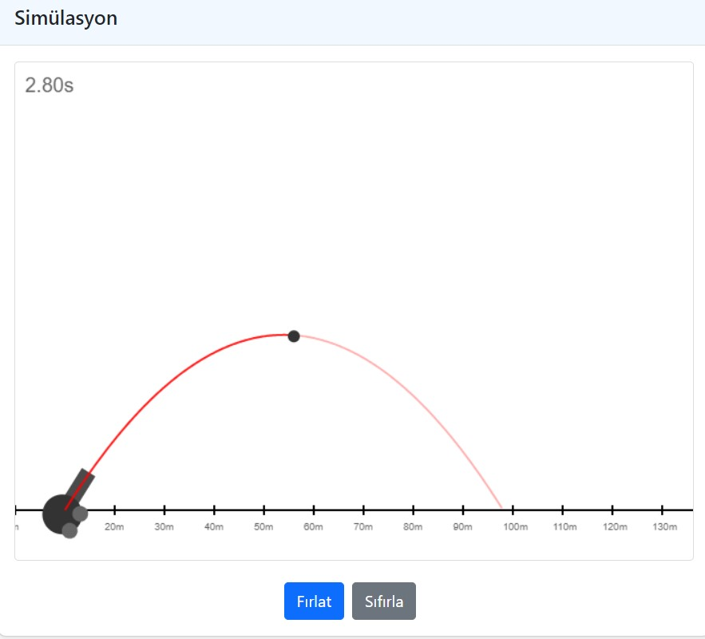
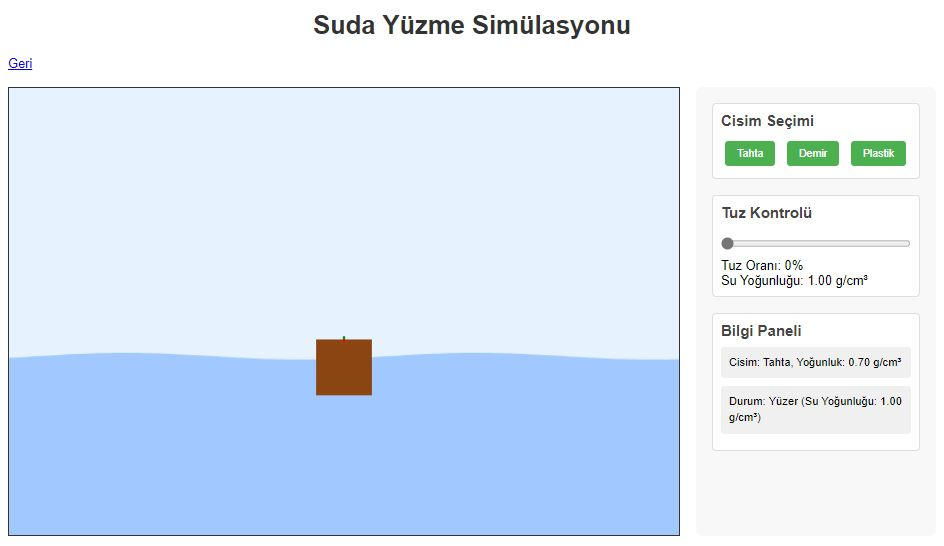

Yatay Atış Simülasyonu
Yatay atış fizik simülasyonu interaktif uygulaması

Suda Yüzme Simülasyonu
Suda yüzme fizik simülasyonu interaktif uygulaması

İşik Kırılması Simülasyonu
İşik kırılması fizik simülasyonu interaktif uygulaması

Tren Sollama Simülasyonu
Tren sollama interaktif uygulaması
PDF İşleme Araçları
PDF'den metne dönüştürme ve PDF karşılaştırma araçları